Welcome to the Kigali Genocide Memorial, a place dedicated to
remembering and honoring the victims of the 1994 Genocide against the Tutsi.
This site provides visitors with important information about the memorial,
including exhibits, guided tours, reflection areas, and educational resources.
Explore the memorial respectfully to learn about Rwanda’s history,
pay tribute to those who lost their lives,
and understand the significance of peace and reconciliation.
Top Things to Do at the Kigali Genocide Memorial
Visit the exhibition halls to learn about Rwanda’s history.
Pay respects at the memorial tombs of victims.
Watch the documentary videos about the 1994 genocide.
Walk through the gardens and reflection areas.
Participate in guided tours for deeper understanding.
Things to See at the Kigali Genocide Memorial
Exhibition halls detailing Rwanda’s history
Memorial tombs of victims
Documentary videos about the 1994 genocide
Gardens and reflection areas
Guided tours for deeper understanding
Genocide Memorial Video
Things to See at the Kigali Genocide Memorial
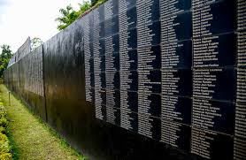
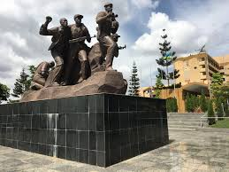
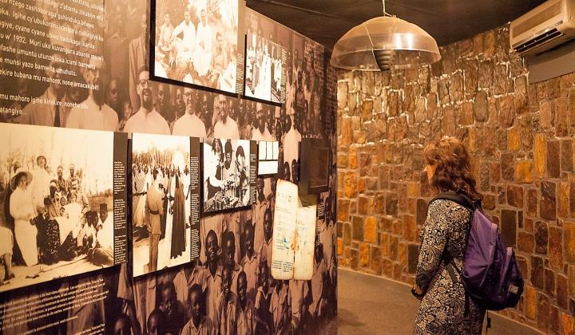
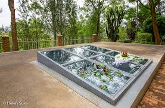
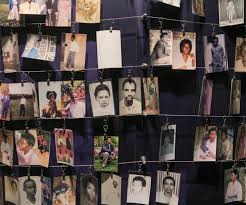
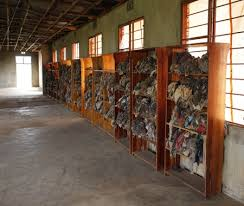
Kigali Genocide Memorial – Visitor Information
Category
Details
Location
Gisozi, Kigali City
Established
2004
Main Purpose
Commemoration of the victims of the 1994 Genocide against the Tutsi
Facilities
Exhibition halls, memorial gardens, documentation center


 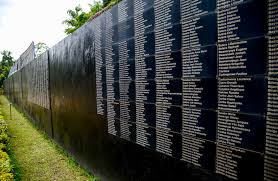
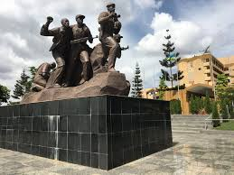
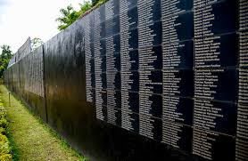
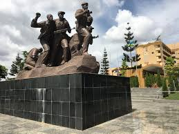
 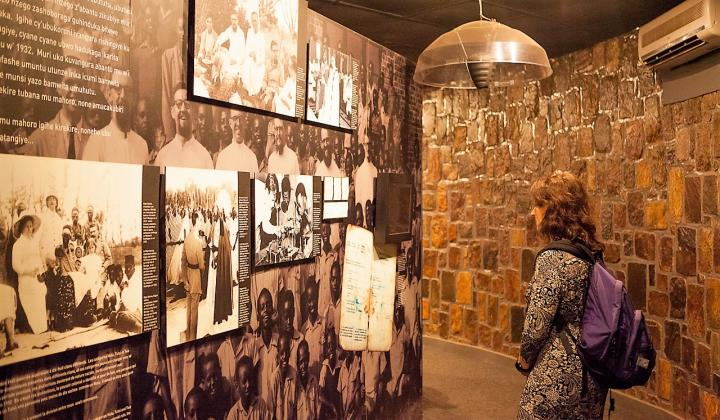
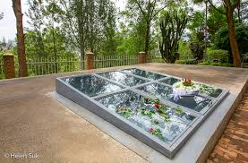
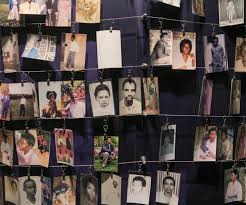
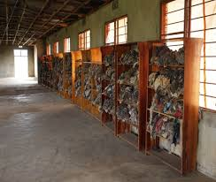
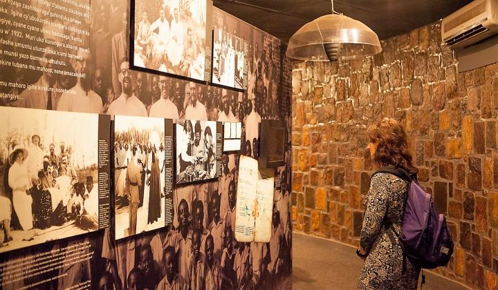
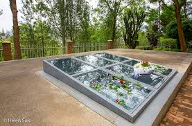
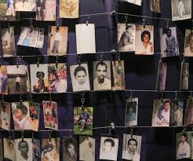
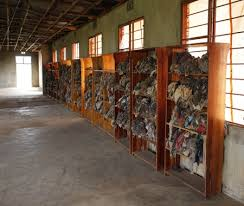